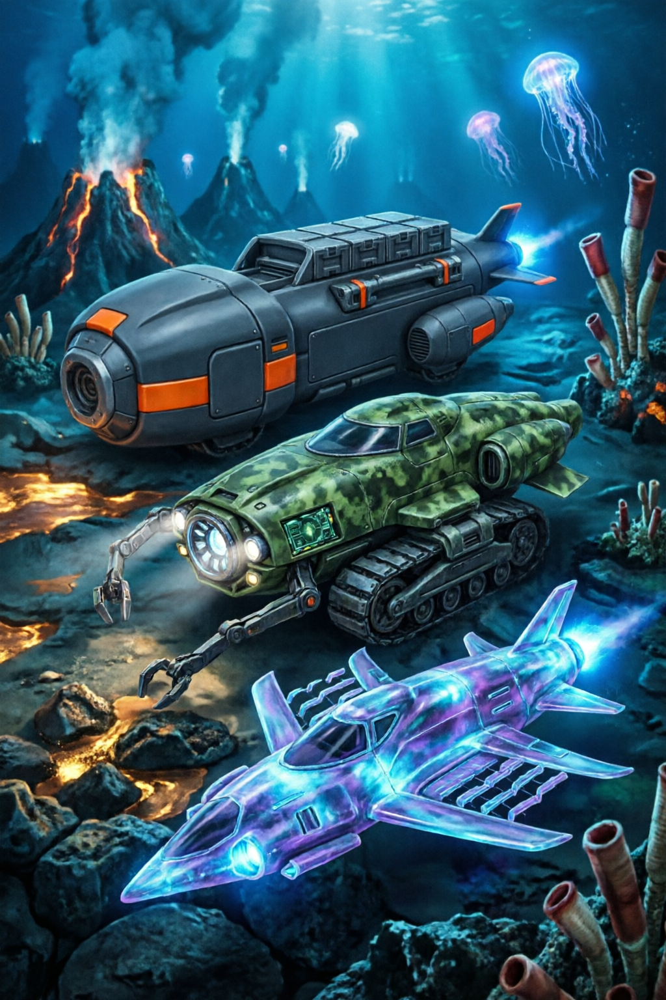

Vehicles are the key to unlocking Subnautica 2's deeper biomes. The Tadpole — your first craftable vehicle — replaces constant swimming with fast, safe traversal. With EA1.1 on the horizon (estimated late June 2026), the PRAWN Suit will add heavy-duty deep-sea capabilities. This guide covers everything from fragment locations to chassis selection to the upcoming PRAWN Suit.
A practical observation after working through this: the data backs up what experienced practitioners have been saying for years — consistency beats intensity.

How to Build the Tadpole
The Tadpole is Subnautica 2's equivalent of the original game's Seamoth — a one-person submersible that dramatically improves your mobility. Unlike the Seamoth, the Tadpole has three interchangeable chassis types, each optimizing for a different playstyle.
Step 1: Find Tadpole Fragments
Before you can craft the Tadpole, you need to scan 20 fragments across three biomes. Each fragment scan contributes to the blueprint progress. The three biome types where fragments spawn are:
Use your Scanner to identify fragments from a distance. Mark fragment-dense areas with Beacons — you'll likely need multiple trips to collect all 20. Scanning fragments is shared in co-op: one player scans, everyone gets credit.
Step 2: Craft the Vehicle Fabricator
Once you've scanned 20 fragments, the Tadpole blueprint unlocks. But you can't craft it at the standard Fabricator — you need a Vehicle Fabricator, a separate module you build inside your base.
Computer Chip requires 2 Copper + 1 Gold. Wiring Kit needs 2 Silver. Both materials are found in deeper caves (100-300m) as Sandstone outcrops. Lubricant comes from Creepvine Seed Clusters processed at the Fabricator.
Step 3: Craft the Tadpole
Once crafted, the Tadpole spawns in the water outside your base. You can rename it, paint it, and install upgrades at the Vehicle Upgrade Console (requires a Moonpool — mid-game base module).
Hotfix 3 fixed the Hammerhead Tadpole aggression bug. You can now park your Tadpole and explore on foot without returning to a wrecked vehicle. Park near Grassy Plateau borders where Hammerheads patrol less. See our Creature Guide for safe parking zones and creature behavior changes.
Three Chassis Types: Which One Should You Pick?
The Tadpole accepts three chassis modules, each unlocked by scanning specific fragments. You can swap between them at the Vehicle Upgrade Console once each chassis is unlocked. This is your most important vehicle decision — the right chassis for your playstyle transforms the game.
Haul Chassis — The Cargo Carrier
Unlock: 8 Haul chassis fragments in the Grassy Plateau wrecks
Best for: Base builders, resource gatherers, co-op material runners
The Haul chassis adds substantial cargo storage to your Tadpole. Instead of the default 8 inventory slots, the Haul carries 24 slots (three rows of 8). It also adds a rear-mounted storage rack visible on the vehicle model. Speed is slightly reduced (roughly 10% slower
For reference, the official Subnautica wiki has a detailed breakdown of the mechanics mentioned here.
than base Tadpole). The Haul is the most popular chassis among the community for mid-game resource runs — load up on Titanium, Quartz, and Copper in a single trip.Drawback: Slower acceleration and turning radius. Not ideal for escaping predators.
Seafrog Chassis — The Exploration Module
Unlock: 8 Seafrog chassis fragments near deep cave entrances in the Kelp Forest
Best for: Deep explorers, solo players, cave divers
The Seafrog chassis adds a vertical thrust booster and extended hull integrity. It can withstand depths up to 400m without the pressure compensator upgrade (base Tadpole maxes at 300m). The vertical boost is a game-changer for cave diving — you can ascend quickly without wasting power. Storage is reduced to 4 slots to accommodate the booster hardware.
Drawback: Minimal storage. Not suitable for resource gathering runs.
ScoutRay Chassis — The Speed Demon
Unlock: 8 ScoutRay chassis fragments in the Coral Caves
Best for: Recon, fast travel, experienced players who know what they need
The ScoutRay chassis optimizes for speed and maneuverability. Top speed is roughly 35% faster than base Tadpole. The turning radius is tight enough to navigate cave systems without scraping walls. Storage remains at 8 slots, same as base. The ScoutRay is ideal for surveying new biomes and quickly returning to base for the right equipment.
Drawback: Lower hull integrity. Fragile against creature attacks. One Hammerhead hit leaves it at 40% health.
Tadpole Upgrades
Once you have a Moonpool with a Vehicle Upgrade Console, you can install modules that enhance your Tadpole's capabilities. Modules occupy one slot each, and you can equip up to 4 simultaneously.
- Depth Module MK1: Increases crush depth from 300m to 500m. Requires 1x Titanium + 1x Plasteel + 1x Enameled Glass. Essential for accessing The Depths biome.
- Storage Expansion: Adds 6 additional inventory slots. Stacks with chassis storage. Requires 2x Titanium + 1x Lithium.
- Sonic Defense: Emits a sonar pulse that deters small predators for 5 seconds. 60-second cooldown. Requires 1x Wiring Kit + 1x Magnetite.
- Engine Efficiency: Reduces power consumption by 20%. Requires 1x Computer Chip + 1x Wiring Kit. Recommended for every Tadpole build.
- Perimeter Defense: Electrifies the Tadpole hull, damaging nearby creatures. Short duration (3 seconds), long cooldown (90 seconds). Useful but situational.
Prioritize Engine Efficiency first (saves battery on every trip), then Depth Module MK1 (unlocks deeper biomes). Storage Expansion is third unless you're using the Haul chassis, in which case you already have plenty of room. Sonic Defense is a luxury — carry Flares on your character instead.
PRAWN Suit Preview: Coming in EA1.1
The PRAWN Suit is confirmed to return in EA1.1, expected within the next few weeks (per Unknown Worlds' June 4 Dev Vlog, as reported by IGN). Here's everything we know so far:
Confirmed features:
- Full exosuit with deep-sea walking and drilling capabilities
- New upgrade modules tailored to Subnautica 2's deeper biomes and the Collector Leviathan region
- Multiple planned PRAWN variants (details not yet announced)
- Compatible with EA1.1's B
For reference, the Unknown Worlds official site has a detailed breakdown of the mechanics mentioned here.
iomod system overhaul for cross-system synergy
Uncertainty to note: Exact module slots, material costs, and specific stat values have not been released. The information above is based on the Dev Vlog teasers and IGN's June 5 coverage. We'll update this guide as soon as the patch lands.
The PRAWN Suit represents a fundamental shift from the Tadpole's "fast exploration" role to a "heavy excavation" role. While the Tadpole is about covering distance, the PRAWN is about staying in a dangerous biome and extracting every resource. Plan for both in your mid-game strategy: use the Tadpole to reach new biomes, then the PRAWN to work them.
Phase 1 (Early Game, 0-5 hours): Swim + Seaglide. Fins are your first mobility upgrade. Don't rush the Tadpole — you need copper and silver stockpiled.
Phase 2 (Mid Game, 5-15 hours): Tadpole with your chosen chassis. Focus on Engine Efficiency + Depth MK1 upgrades. Use the Base Building Guide to set up a Moonpool.
Phase 3 (Late Game, 15+ hours): Tadpole for travel + PRAWN Suit for deep biome excavation. Coordinates with EA1.1 patch notes when they drop.
Vehicle Co-op Tips
In multiplayer, vehicles work a bit differently:
- One pilot only: Only the Tadpole owner can drive it. Guests can ride as passengers by swimming close and pressing the interact key near the vehicle hatch.
- Shared fragment scanning: If one player scans a Tadpole or chassis fragment, all players in the session unlock it. Split up to find fragments faster.
- Parking discipline: Assign each player a parking spot near the base. With 4 Tadpoles, things get crowded around a single Moonpool. Read our Co-op Guide for base layout tips.
Vehicle FAQ
- Can I rename my Tadpole? Yes — interact with the vehicle console inside the Tadpole and select "Rename Vehicle." Names are visible to all players in co-op.
- What happens if my Tadpole is destroyed? It explodes and drops its inventory in a floating crate. Craft a new one at the Vehicle Fabricator. Retrieve the crate within 10 minutes or it despawns.
- Can I dock the Tadpole underwater? Yes — build a Moonpool. The Tadpole docks automatically when you swim it into the Moonpool bay. This also charges its power cell.
- Does the PRAWN Suit replace the Tadpole? No — they serve different roles. Tadpole is your daily driver; PRAWN is your heavy-duty work vehicle for dangerous biomes.
Build the Tadpole as soon as you have 20 fragments and a Vehicle Fabricator. Pick the Haul chassis for resource runs, Seafrog for deep exploration, or ScoutRay for speed. With EA1.1 around the corner, the PRAWN Suit will complete your vehicle lineup — giving you the heavy equipment needed for Subnautica 2's most dangerous depths.